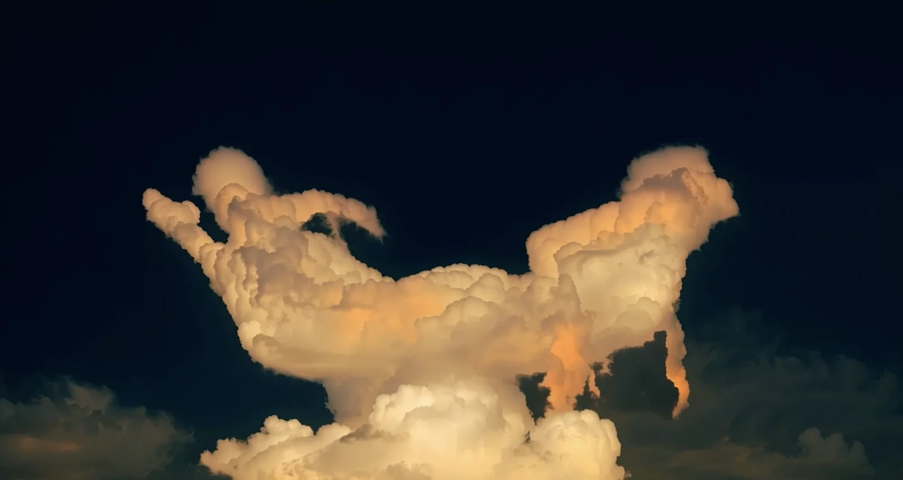

Lenovo · It’s Gonna Be a Good Good Summer
Lenovo Yoga / Snapdragon X Elite · 2024
Animation support for Paul Trillo’s film.
It’s Gonna Be a Good Good Summer is a film by Paul Trillo and makeitrad, supported by Lenovo Yoga and Snapdragon X Elite. Dance flows into generated scenes of clouds and shifting forms.
I contributed additional animation. The credits list me as StLaurentJr under Additional animation support.
Dance and Choreography
The film features HOK (Hokuto Konishi) and Erica Klein. HOK is a dancer, choreographer and co-director of the film; Erica Klein is a dancer and choreographer.
Their filmed movements became the basis of scenes in which dance transforms into cloud figures.
Stills and Working Materials


